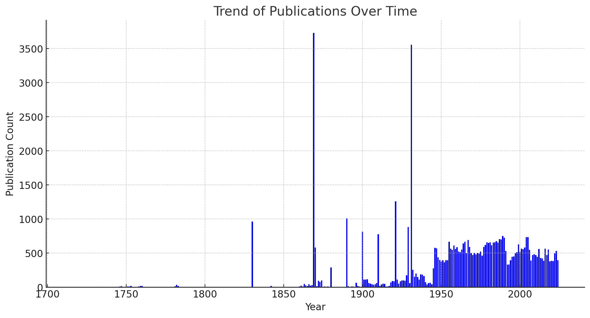
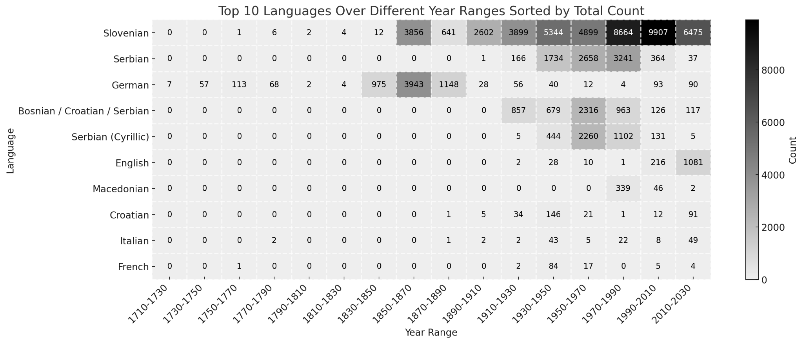
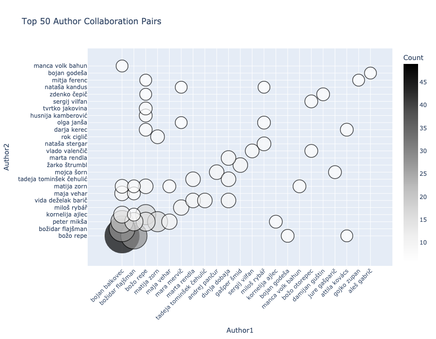
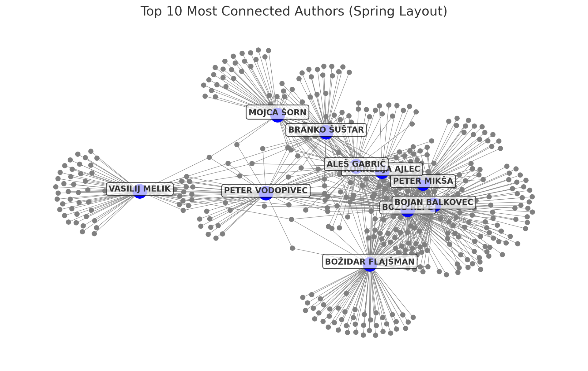

Unlocking History: A Redesign and Content Analysis
IZVLEČEK
ODPIRANJE ZGODOVINE: PRENOVA IN ANALIZA VSEBINE PORTALA SISTORY 5.0
1Portal Zgodovina Slovenije – SIstory.si predstavlja pomembno interdisciplinarno zbirko publikacij, podatkov, zbirk in metapodatkov, predvsem na področju zgodovinopisja. Zbirka zajema širok spekter zgodovinskih publikacij ter metapodatke, ki jih opisujejo. Nedavna prenova portala SIstory je bila osredotočena na prizadevanja, da podatkov ne bi ponudili le kot zbirke zgodovinskih publikacij, temveč bi omogočili tudi večjo preglednost, interoperabilnost in dostopnost raziskovalnih podatkov širšemu občinstvu, tako raziskovalcem kot splošni javnosti. Prispevek predstavlja proces prenove portala in njegove tehnične izboljšave ter poglobljeno analizo vsebin, ki jih portal ponuja v sedanji obliki.
2Ključne besede: SIstory, prenova, podatkovni sistemi, metapodatki, zgodovinopisje
ABSTRACT
1The portal History of Slovenia - SIstory.si is an interdisciplinary collection of historical publications, data, collections and metadata that has been operating since 2008. The portal encompasses a diverse range of historical information, including publications, images, extensive databases, and comprehensive metadata that describe the objects. The recent redesign of the SIstory portal has focused on ongoing efforts to offer the data not only as a collection of historical publications but also to enable greater transparency, interoperability, and availability of research data to a broader audience. This paper examines the portal’s redesign, focusing on technical improvements, and then provides an in-depth analysis of its content.
2Keywords: SIstory, redesign, information systems, metadata, history
1. Introduction
1The Research Infrastructure of Slovenian Historiography (RI INZ) was established in September 2006. While the foundations were laid at that time, its primary aim – the digitisation and online publication of frequently used Slovenian historical content – was only defined and developed in the following years. An important aspect of the infrastructure’s early development was the popularisation and promotion of historical–scientific research among the general public and the research community, which was to be achieved through a digital portal or a similar application. The online research and educational portal History of Slovenia – SIstory was launched in September 2008. A test version of the portal was presented to the Institute’s researchers at the beginning of 2008, allowing them to test the portal’s functionality, logical sequence of functions, content hierarchy, links, and the various search methods.1
2The main content of the portal at the time consisted of a combination of historical literature, historical sources and technical infrastructure services. Its main goal was to provide digitised and freely accessible research results and sources. Emphasis was placed on preserving older, less easily accessible sources, thereby safeguarding cultural and scientific heritage.2 One of the first significant projects to populate the portal was the comprehensive digitisation of the entire edition of the scientific journal Prispevki za novejšo zgodovino (Contributions to Contemporary History), which includes issues from 1957 to the present day. In the following years, efforts expanded beyond internal production to include numerous Slovenian and international editorial offices, institutions, and individual collectors, in order to obtain verified historiographical works and materials. Alongside content acquisition, the necessary copyright permissions for publication were systematically obtained and recorded.3
3The operation and design of the SIstory portal originally focused on supporting the research processes of the Institute’s research community members. Following a highly successful initial response from the public and related institutions, SIstory gradually expanded beyond the boundaries of “written history,” incorporating interactive presentations of historical content supported by emerging technologies.4 With data preservation and research community integration at the core of its development, SIstory became the primary output of the newly established Slovenian national node of the DARIAH ERIC research infrastructure (DARIAH-SI),5 with the Institute (specifically RI INZ) serving as the national coordinating institution.6
4The redesign presented in this paper focuses on technological advances to improve the accessibility of the data. Furthermore, the data available on the portal has not yet been fully explored; therefore, part of our work consists of a content analysis. Finally, we are focusing our efforts on the transparency, reuse, and accessibility of data, as well as user-friendly interaction with the portal. The rest of the paper is structured as follows: the opening Section outlines the history and placement of the portal within the field of digital humanities, along with a brief overview of the portal’s technical development. The next Section presents the redesign process, providing an overview of the upgrade components (technical foundations and metadata), as well as basic content statistics. The following Section discusses the content analysis, highlighting notable trends and their significance for the portal. Finally, the last Section provides an overview of the paper and presents some options for future work.
2. History of the SIstory Portal
1The landscape of digital humanities in Slovenia during SIstory’s early development differed significantly from its current state. At the time, the field was still in its early stages, with limited infrastructure and awareness, and only beginning to establish itself within academic and research institutions. Hadalin7 details the state of digital humanities in Slovenia at that period, highlighting key institutions (such as ARNES and the Jožef Stefan Institute), and researchers who, despite general scepticism, advocated for the integration of this emerging field into mainstream science and curricula. Additionally, the author outlines essential services and research infrastructures such as DARIAH-SI and CLARIN.SI, which remain fundamental for open research data preservation and are vital to the field’s growth. He also emphasises the SIstory portal as the “central hub for digital history” and outlines its importance as a collection of materials relevant not only to the research community of Slovenian history but also to wider research communities.8
2It is important to note that while the core features of SIstory, particularly its primary purpose of digitising historical sources,9 align with both traditional research data repositories and digital libraries, SIstory was never intended to be either. As evidenced by various sources from the time of its initial launch,10 the portal was always meant to be co-created with users and the research community. Its modular design was specifically developed to facilitate direct engagement with users. This is further supported by the diversity and volume of materials, databases, and interactive technologies that have been, and in many cases remain, integral to the portal’s ongoing development:
- ZgoLj (Zgodovina Ljubljane – History of Ljubljana): ZgoLj was a mobile application developed as part of SIstory, which supported augmented reality and enabled a virtual tour of Ljubljana’s historical centre, based on old photographs, provided by the Historical Archives of Ljubljana.11
- Interactive exhibitions: Utilising similar technologies, SIstory hosted interactive exhibitions, such as “Slovenians and the First World War 1914–1918”.12 Due to the obsolescence of the technologies used to create these exhibitions, such examples only contain their metadata records.
- History Citation Index (HIS): Almost simultaneously with the development of SIstory, another important database – History Citation Index (Zgodovinarski indeks citiranja or ZIC) – was in development. The primary purpose of ZIC was to create a database of citations of Slovenian humanities production, filling the gap between the citation databases13 recognised by the Slovenian Research Agency (ARIS, then ARRS) and humanities publishing practices.14 The database was later also recognised by ARIS and remains regularly updated to this day.15
- Database of WWI victims: A national, freely accessible database of deceased individuals from the area within the borders of the Republic of Slovenia, resulting from the long-standing project Zbiranje podatkov o vojaških žrtvah 1. svetovne vojne na Slovenskem (2015–2018). The time period encompasses data from the war period, but also includes deaths resulting from the war’s effects after 1918.16
- Database of WWII victims: The database results from research conducted between 1997 and 2012 as part of four major research projects. It is a systematic record of military and civilian persons who had the right of residence in the present-day Republic of Slovenia during the Second World War and the immediate post-war period (May 1940 – January 1946) and lost their lives due to wartime and (revolutionary) post-war violence or the consequences of war. In 2025, both the WWI and WWII databases were redesigned to provide not only unrestricted access to previously limited data but also to enable public participation. The updated version now allows users to contribute additional information, comments and personal narratives within designated layers, promoting a more comprehensive and collaborative approach to historical documentation.17
- Population censuses – A database of digitised population census questionnaires for Ljubljana. A population census was carried out for the first time in 1830, based on an imperial patent from 1804 and new instructions issued in 1829. The statistical questionnaires for the town of Ljubljana (Conscriptions Aufnahms Bogen) have been fully preserved and are now organised into eleven census units, according to Ljubljana’s cadastral municipalities and house numbers.18
3While the development and release of the abovementioned databases (ZIC, Popisi, WWI & WWII) were all carried out under the SIstory banner, they remained standalone until recently,19 complementing the core of the SIstory portal – the publications. In this paper, we focus on the development history, update, and subsequent analysis of this central component.
2.1. Development history of the SIstory portal
1The SIstory portal has a relatively long history of development. Since its initial release in 2008, several versions of the portal have been released as individual upgrades. In 2011, the first software and technological upgrade was carried out, establishing the latest standards and enabling faster and more stable system operation. This upgrade also played an essential role in establishing a national digital infrastructure for the humanities and arts20. The first upgrade consisted of several components:
- Content administration in Apache SOLR21 and upgrading folder structures and file names.
- Implementation of the Dublin Core metadata standard (DC)22. The original schema contained all 15 basic DC elements. A year later, the original schema was upgraded with elements from the qualified DCMI Metadata Terms (DCTERMS23).
- Creation of a unique and permanent URN – Uniform Resource Name.
- Introduction of the Sphinx24 metadata search engine. Two search engines were implemented: a basic and an advanced one.
- Upgrading of the portal administration.
- Design of the structure and access levels for users.
2In 2013, the portal was updated to introduce the SIstory metadata schema, a customised set of metadata elements developed to better reflect the nature of the content, which had outgrown the descriptive capabilities of the DCTERMS element set. A major update followed in 2016, during which a mapping between the SIstory schema and Dublin Core was established to enhance data interoperability. The schema was then expanded with elements and structures from the HOPE application profile,25 a recognised standard in the GLAM community, resulting in the SIstory application profile.26 This profile has since served as the portal’s primary metadata standard, shaping the structure, syntax, and semantics of the metadata input tool. Besides the metadata enrichments, new system frameworks and graphical designs for both the administration and user interfaces were also installed. In addition, the search engine (filtering and sorting of results; full-text search) was also taken into account in the updates. Overall, since the portal’s inception in 2008, a series of upgrades have been made, each improving the portal’s functionalities and features. The entire development history is documented in Cvek et al.27 This brings us to today and to new steps in the portal’s development – the decision to redesign the portal from the ground up.
3. SIstory: the Redesign
1As the portal was updated multiple times, the code became too extensive to manage efficiently. Moreover, the concepts and various solutions developed over the years were very ambitious and deemed necessary at the time. However, they did not prove to be as useful in daily practical operations as initially thought. Additionally, the outdated appearance of the user interface was a decisive factor in our choice to rebuild from scratch. When planning the redesign, we considered the legacy issues and solutions from previous versions of the portal to enhance system functionality and create a familiar user experience.
2The redesign consisted of several sections, from purely technical aspects (such as the code base and integration of the OAI-PMH protocol) to simplifying the metadata schema, refining the user interface, and restructuring the content classification.

Source: Own work
3.1. Technical design
1In terms of technical composition, the redesigned SIstory 5.0 portal is based on a robust technical framework, while the backend utilises Django for efficient data management and content delivery. On the frontend, SIstory employs Next.js and React in combination with Node.js for dynamic and interactive user interfaces. This modern frontend stack enables smooth navigation and responsive design across various devices, improving accessibility for users accessing historical content. Figure 1 shows an example of the redesigned user interface. The portal’s database architecture is based on PostgreSQL and provides a robust foundation for storing and retrieving large volumes of historical data with high speed and reliability. In addition, SIstory integrates Matomo, an analysis function that enables administrators to gain valuable insights into user behaviour and interaction patterns, thus forming the basis for future developments and improvements.
2For efficient search functionality, SIstory incorporates Elasticsearch and Kibana, allowing users to quickly locate relevant historical documents and sources. The use of Elasticsearch ensures fast and accurate search results, improving the overall usability of the portal. In addition, SIstory employs a Handle28 system to provide permanent identifiers, enabling reliable and permanent access to specific historical documents and sources. This allows users to reference and cite materials consistently, contributing to the scholarly integrity and reliability of the portal. Overall, SIstory’s technical specifications underline the portal’s commitment to providing a robust and user-friendly platform for accessing Slovenia’s rich historical heritage.
3.2. Metadata design
1The portal previously based its metadata element set on the SIstory application profile (SIstory AP), which was derived from the HOPE application profile. In practice, this posed a problem as SIstory AP contained several elements (and element groups) that were not used as frequently as initially assumed. This, in turn, led to a simplification of the profile. To this end, an analysis of the existing SIstory AP was conducted to identify the metadata elements that should be retained and address those that present legacy issues.
2The current state of the metadata application profile comprises 26 elements (reduced from the original 33 elements), with a focus on the DC and DCTERMS metadata elements and only a few additional elements from the previously mentioned HOPE AP. One of the main reasons for this shift in focus is to improve the interoperability of our metadata. Only a limited number of elements of the “SIstory” namespace have been retained29, primarily due to the remnants of older publications described with these specific metadata elements. The overview of the major metadata groups is presented in Table 1.
| Metadata | Unique Values | Nr. of Usages |
| No. of entries | 62.656 | |
| Creator | 5.319 | 25.461 |
| Subject | 24.236 | 333.667 |
| Publisher | 1.091 | 57.686 |
| Collection | 432 | 1.895 |
| Contributor | 1.322 | 44.088 |
| Type | 12 | 63.362 |
| Language | 61 | 74.853 |
3In total, SIstory comprises over 60,000 unique entries and more than 5,000 unique authors/physical persons (under the category “Creator”)30, while “Subject” contains keywords that describe the publications. Secondary forms of authorship are described in the category “Contributor” (e.g. editor, translator...), while the type of publication based on the controlled vocabulary (DCMI Type31) encompasses 12 categories. Finally, the portal includes publications in 61 different languages, which are presented in more detail in the Language trends subchapter.
4. SIstory Unveiled: Content Analysis
1In the effort to present the redesign of the SIstory portal, it became clear that focusing mainly on technical and aesthetic improvements would not fully capture the essence of the portal – its content, or rather, its historical sources. Therefore, we expanded the scope of the work to include a comprehensive content analysis, aimed at gaining a deeper understanding of the content available on the portal.

Source: Own work
2The analysis focused on various aspects of the portal’s content, ranging from basic statistics of the main metadata groups (excluding individual metadata elements) to a more in-depth analysis of:
- publication date – when a work was first published;
- publication keywords – e.g., Jugoslavija, učbeniki;
- language of the publication – classified according to the ISO 639-2 standard;
- author networks – mapping connections between contributors.
3This, in turn, allows us to demonstrate not only the scope of available content but also to highlight the different types and variations of this content.
4.1. Publication trends
1One of the trends analysed in this section is the distribution of publications over time according to their publication date, to determine which years are best represented in terms of published content. The results are shown in Figure 2.
2One of the first trends to emerge is the distribution of publications between approximately 1715 and the mid-20th century, which exhibits several significant spikes in the number of publications. Conversely, the post-World War II period displays a much more consistent flow. The spikes in the timeline are most likely caused by the publication of several large works or specific types of publications (e.g., textbooks, population censuses) on the portal. In contrast, the steady publication flow from the post-war period to the present day suggests a greater variety of publication types (e.g., literature, research and studies, monographs, etc.) and the absence of very large volumes of similar publications. The nature and content of these publication trends are examined in more detail in the keyword analysis, which provides additional insight and substantiates the reasons for the identified trends.
4.2. Keyword analysis
1The keyword analysis of the portal content examined the ten most frequently used keywords to describe sources in the individual menus for each of the 20 years (except the period 2010–2024). This analysis was conducted for the first-level menus: Viri (Sources), Literatura (Literature), Dogodki (Events), Podatki (Data), and DH (Digital Humanities). The results are presented in the following sections32.
4.2.1. Sources – top ten keywords
1Table 2 gives an overview of the ten most frequent keywords for each twenty-year period in the “Sources” menu. This category encompasses various types of sources, including archival, oral, and printed sources, as well as digitised versions of physical objects. The latter are mainly images of physical objects, such as statues or death masks, and printed sources.
2In the 18th century (1710–1790), several recurring keywords – such as patenti (patents), odloki (decrees), norme (norms), and Marija Terezija – point to one of the larger collections on the portal: Collection of various patents, decrees, ordinances, norms, instructions, etc., issued by Charles VI, Maria Theresa, and Joseph II,33 acquired through collaboration with the Central Judicial Library. Additional keywords, such as “popisi prebivalstva” (population censuses) and “občina” (municipality), highlight a significant number of censuses from this period.
3A similar trend can be observed in the 19th century, with census records accompanied by theatre lists from various provincial theatres (e.g., the Provincial Theatre in Ljubljana), and publications like koledar (the calendar of the Society of St. Mohor – an annual publication containing a calendar, religious prayers, illustrations, poetry, etc.).34 Keywords such as Kranjska, Carniola, and deželna avtonomija (provincial autonomy) further indicate the prominence of minutes from the Carniolan Provincial Assembly.
* * *
4The publications from the early 20th century, most frequently uploaded to the portal, include censuses (marked by keywords like popisi prebivalstva and občina), official gazettes (uradni listi) from various states and periods35 (e.g., Slovenia, Yugoslavia, Serbia, Bosnia and Herzegovina), and stenographic records (stenografski zapisniki) from legislative and executive bodies – all of which became increasingly prevalent during this period.
| Decade Range | Top Keywords |
| 1710-1729 | Karl VI., Patenti, odloki, predpisi, norme, navodila, okrožnice |
| 1730-1749 | Patenti, odloki, predpisi, norme, navodila, okrožnice, Marija Terezija, Karl VI., Karl VI., Corbinian Graf von Saurau, Marija Terezija, Anton Barbo Waxenstein, Marija Terezija, Anton Josef Auersperg, Marija Terezija, Anton Josepf Graf von Auersperg, Marija Terezija, Corbinian Graf von Saurau, Marija Terezija, Fridrich Wilhelm Graf von Haugwitz |
| 1750-1769 | Patenti, odloki, predpisi, norme, navodila, okrožnice, Marija Terezija, Karl VI., Marija Terezija, Marija Terezija, Anton Josepf Graf von Auersperg, Marija Terezija, Anton Joseph von Auersperg, Marija Terezija, Ludvik XVI., Marija Terezija I. |
| 1790-1809 | celjski grofje, drame, leposlovje, Celje, Ljubljana, hišne številke, rodbine, rokopisi, živinozdravniški recepti |
| 1810-1829 | Ljubljana, hišne številke, Ludvig van Beethoven, popis |
| 1830-1849 | Ljubljana, Slovenija, 1830-1857, popisi prebivalstva, programi, gledališča, 19. stoletje, gledališki listi, gledališče, Avstrija |
| 1850-1869 | Slovenija, 1869, popisi prebivalstva, Ljubljana, občina Dobrnič, občina Trebnje, občina Prečna, občina Mirna, občina Velika Loka, občina Črmošnjice |
| 1870-1889 | Slovenija, popisi prebivalstva, občina Vrhnika, 1870, 1880, Kranjska, deželna avtonomija, provincial autonomy, Carniola, koledar |
| 1890-1909 | Slovenija, popisi prebivalstva, občina Vrhnika, 1890, 1900, Družba sv. Mohorja, koledar, Avstro-Ogrska, popis prebivalstva, upravna razdelitev |
| 1910-1929 | Slovenija, popisi prebivalstva, Ljubljana, 1921, šolski listi, 1910, občina Vrhnika, 1929, Komunistična partija Jugoslavije, delavsko gibanje |
| 1930-1949 | Slovenija, Ljubljana, popisi prebivalstva, 1931, Jugoslavija, uradni listi, Srbija, BiH, Bosna in Hercegovina, uradni list |
| 1950-1969 | uradni listi, Jugoslavija, Ljubljana, BiH, Bosna in Hercegovina, Kosovo, Vojvodina, stenografski zapisniki, Socialistična republika Slovenija, družbeno samoupravljanje |
| 1970-1989 | Jugoslavija, uradni listi, stenografski zapisniki, predstavniška telesa, družbeno samoupravljanje, Socialistična republika Slovenija, Kosovo, BiH, Bosna in Hercegovina, Vojvodina |
| 1990-2009 | Slovenija, parlament, zakonodaja, državni zbor, Jugoslavija, uradni listi, skupščina, BiH, Bosna in Hercegovina, Vojvodina |
| 2010-2024 | popisi prebivalstva, Ljubljana, analiza, 1921, zgodovina, krajevna imena, 1900, krajevni leksikoni, toponimi, privilegiji |
5Finally, for the more recent period (2010–2024), the keywords primarily refer to studies conducted in connection with the censuses of Slovenia from 1830 to 1931, which resulted from cooperation with the Historical Archive of Ljubljana.
4.2.2. Literature – top ten keywords
| Decade Range | Top Keywords |
| 1810-1829 | učbeniki, 19.st., abecedniki, slovenska književnost, slovensko-nemški abecednik, učbenik, učbeniki za osnovne šole, verouk |
| 1830-1849 | učbeniki, 19.st., izobraževanje, katekizem, katoliška vera, matematika, verouk |
| 1850-1869 | finance, Avstrijsko cesarstvo, učbeniki, slovnica, banke, valute, finančno vprašanje, slovenščina, valuta, nemščina |
| 1870-1889 | učbeniki, nemščina, matematika, politične stranke, organizacije in društva, čitanke, zgodovina, učbeniki za osnovne šole, berila, Kranjska, učbeniki za srednje šole |
| 1890-1909 | politične stranke, organizacije in društva, avstrijska doba, politični programi, Književna poročila, učbeniki, katoliški tabor, liberalni tabor, Narodopisne razprave in Mala izvestja, Mala izvestja, matematika |
| 1910-1929 | Slovstvo, politične stranke, organizacije in društva, politični programi, Izvestja, avstrijska doba, Razprave, učbeniki, liberalni tabor, katoliški tabor, zgodovina |
| 1930-1949 | Slovstvo, Razprave, Izvestja, zgodovina, učbeniki, Pregled, Zapiski, učbeniki za srednje šole, geografija, Jugoslavija |
| 1950-1969 | ocene in poročila, druga svetovna vojna, Slovenija, zgodovina, NOB, Ljubljana, zgodovinski pregledi, arheologija, Slovenci, Jugoslavija |
| 1970-1989 | ocene in poročila, druga svetovna vojna, Slovenija, arhivsko gradivo, arhivi, poročila, NOB, srednji vek, Jugoslavija, zgodovina |
| 1990-2009 | ocene in poročila, Slovenija, arhivi, druga svetovna vojna, zgodovina, arhivsko gradivo, Slovenci, arhivistika, biografije, Jugoslavija |
| 2010-2024 | ocene in poročila, Slovenija, zgodovina, Jugoslavija, druga svetovna vojna, socializem, Ljubljana, prva svetovna vojna, vojaška zgodovina, ocene |
1Similarly, Table 3 shows the ten most frequent keywords over a single 20-year period for the Literature menu, which consists of publications such as research monographs, (Slovenian) serial history publications – along with the in-house produced scientific journal Prispevki za novejšo zgodovino (Contributions to Contemporary History) – school and university theses, and collections of digital monographs.
2The 19th century is primarily characterised by the textbooks produced as part of the projects “Šolski listi” and “Schools and Imperial, National, and Transnational Identifications: Habsburg Empire, Yugoslavia, and Slovenia”.36 These represent an extensive digitisation project of textbooks, mainly intended for schools, covering various school subjects, and identified in the table with the following keywords: učbeniki (textbooks), abecedniki (abecedarium), matematika (mathematics), čitanke, and berila (reading materials), etc. For the early to mid-20th century, however, the topics are then expanded to include additional materials on politics, political programmes, and political parties, as indicated by the keywords politični programi (political programmes), katoliški tabor (Catholic camp), and liberalni tabor (Liberal camp). For the second half of the 20th century, the themes shift towards World War II, more precisely to the role of Yugoslavia (and Slovenia) in World War II (keywords). Directly related to this is also a considerable amount of literature referring to archival sources (arhivsko gradivo), mostly in connection with a specific journal, The Gazette of the Archival Association and Archives of Slovenia. Lastly, a very prominent keyword, ocene in poročila (reviews and reports), refers to a particular form of contributions to various Slovenian (scientific) journals, where authors provide reviews of various published works on topics covered by the journal (mainly history in this case).
4.2.3. Events – top ten keywords
1While text documents are the predominant type of publication within the SIstory portal, RI INZ also offers in-house production and recording of various events, as well as digitisation of various exhibitions related to the field of history, the Institute, or related institutions.
2The first key difference between Tables 2 and 3 is the significantly shorter time span, which is expected given that the portal has only existed since 2008. This also explains the limited and unrepresentative keyword coverage for the 1990–2009 period, which includes only two publications – both focused on girls’ education in Ljubljana37 and Slovenian students abroad38. However, the number of publications increased in the period 2010– 2019. The most common keywords, such as Filozofska fakulteta (Faculty of Arts), Oddelek za zgodovino (Department of History), zgodovina (history) and Slovenija or Jugoslavija, refer to the institutions, organisations and general topics that organised the events (mostly recorded lectures).
4.2.4. Data and Digital Humanities – top ten keywords
1In contrast to the keyword analysis of sources and literature, which covers several centuries, the two following publication types, Podatki (Data) and DH (Digital Humanities data), are limited to the last decade (2010–2024). In both cases, the number of publications is relatively small, so these keywords are more representative of individual sources rather than the entire portal.
| Decade Range | Top Keywords |
| 1990-2009 | Kranjska, Ljubljana, Slovenija, dekleta, dokumentarni filmi, izobraževanje, univerze, zgodovina, študenti |
| 2010-2024 | Središče za javno zgodovino, Filozofska fakulteta, Oddelek za zgodovino, zgodovina, Slovenija, Jugoslavija, šolstvo, muzej, druga svetovna vojna, video |
2Table 4 mainly focuses on research data in the history field, specifically the data on old place names in Slovenia and censuses of the Jewish population in Slovenia.39
3While the categories examined are generally research data, the Digital Humanities category mainly reflects the vision of the RI INZ at the time – expanding into digital humanities and providing data and tools to support research activities in these (related) fields. This eventually resulted in the creation of a separate repository for digital humanities, the SI-DIH repository, another product of RI INZ and DARIAH-SI.
| Decade Range | Top Keywords |
| 2010-2024 | nadgrajena resničnost, XML shema, SIstory augmented reality XML, metapodatki, DOCX, HTML publikacija, SIstory, SIstory nadgrajena resničnost XML shema, TEI, administracija |
4As these were the infrastructure’s initial steps towards DH, there are only limited publications and tools available, but they incorporate the technologies of that period. This is also reflected in the keywords in Table 5, such as nadgrajena resničnost (augmented reality), XML shema (XML schema), metapodatki (metadata), HTML, and TEI.
4.3. Language trends
1In addition to keyword analysis, we also examined the languages of the publications within the SIstory portal, as shown in Figure 3.
2It is not surprising that the most frequent language of publications on the portal is Slovenian, with a total of 46312 occurrences, mainly in the period from 1970 to 2025, especially between 1990 and 2025. The second most common language is Serbian (8201 occurrences), although an explicit distinction must be made here, as Serbian also falls into two other language categories: Serbian (Cyrillic) for publications in Cyrillic script (3947 in total) and the Bosnian/Croatian/Serbian category for publications where the language could not be explicitly identified (mostly publications referring to the Yugoslav Official Gazettes), which are the most frequent among the publications.

Source: Own work
3Publications in Serbian across all mentioned categories were most frequently issued between 1930 and 1990, mainly in connection with official gazettes.
Another commonly used language is German, particularly during the 19th century – especially between 1850 and 1870 – when many publications related to Slovenian history were produced in the Austrian Empire (1804–1867) and Austria-Hungary (1867–1918), often written in both German and Slovenian. While German was less prominent in the late 18th and early 19th centuries (1710–1830), it became more notable in conjunction with Slovenian in later decades. Less frequently used languages – each appearing fewer than five times – include Spanish (Castilian), Latin, Polish, Arabic, Albanian, Ukrainian, and Esperanto.40 Additionally, 42 publications are multilingual, and some items have no associated language. This is especially true of the digitised collection “The Casting of Death”, a series of death masks detailed in Meden and Pančur.41
4.4. Authorship
1As the final part of our comprehensive analysis of the content and characteristics of the SIstory portal, we examined authorship trends, focusing on frequent author pairs (Figure 4) and co-authorship networks (Figure 5).

Source: Own work
2Figure 4 shows the co-occurrence of author pairs based on the “Author” metadata field, which includes only individual publication authors. Organisational, editorial, and translation authorship were excluded from the analysis.
3Of the original 6317 author pair combinations, 5511 occurred only once, representing 87.3% of all author pairings. The remaining 12.7% consist of combinations with multiple occurrences. This may suggest limited recurring collaborations and a diverse research network, as well as the fact that the production on SIstory includes a high number of unique collaborators. Supporting this idea is the very high percentage of publications with single authorship across SIstory’s entire production (94.5%)42, indicating a trend of authors favouring individual work over joint efforts.
4Several authors have frequently collaborated on publications available through the portal, with specific pairs standing out for their joint work. The most frequent collaborators are Bojan Balkovec and Božo Repe, who co-authored 49 publications. They are followed by Božidar Flajšman and Božo Repe with 29 joint works, and Bojan Balkovec and Božidar Flajšman with 28. Although these author pairs exhibit high co-occurrence, manual checks reveal that most of their collaborations are concentrated in the Events section (Dogodki), specifically video recordings on historical themes produced by the Department of History, Faculty of Arts, University of Ljubljana – an institution to which all three authors are affiliated.
5In contrast, author pairs with fewer than ten co-occurrences tend to be more varied and are more likely to produce traditional academic outputs such as scientific papers or monographs. For example, Gašper Šmid and Žarko Štrumbl co-authored eight scientific papers, mainly in the journal Arhivi, while Mitja Ferenc and Božo Repe collaborated on six chapters in a scientific monograph. However, this pattern is not universal; manual checks of author pairs within the 5–10 co-occurrence range revealed exceptions. One such case is that of Marta Rendla and Vida Deželak Barič, who co-authored eight works – all of which are periodic interim reports for a research project.43
6Within the scope of the authorship analysis, we also examined the author network. Figure 5 shows the ten most connected authors, based on the number of direct co-authorship links for each author.

Source: Own work
7The co-authorship network, shown in Figure 5, highlights the ten most interconnected authors and their relationships, outlining key figures within the SIstory production. With a density metric of 0.0046, the network is relatively sparse, indicating that most authors are not directly connected. However, the average path length of 3.89 suggests that most authors can be linked within about four steps, implying that although direct connections are limited, authors are frequently linked through short co-authorship chains.
8Many of the most connected authors, such as Božo Repe, Bojan Balkovec, and Božidar Flajšman, are already identified in Figure 4 as frequent collaborators from the same institution. However, additional authors, like Mojca Šorn and Vasilij Melik, although not part of recurring co-authorship pairs, are notable for their high connectivity within the network. Their position on the periphery of the top ten suggests they may not co-author often but remain important figures within the portal’s production.
5. Conclusions
1This paper presents the History of Slovenia – SIstory.si portal, detailing its background and the technical, visual, and content-related updates in the latest version (5.0). The development of the portal illustrates its evolving role in supporting historical research and its contribution to the expanding field of digital humanities. Over time, its reach has grown beyond the original academic focus, serving a broader audience interested in Slovenian history.
2The decision to redesign the portal from the ground up appears to have been a step in the right direction, as initial user feedback indicates improved responsiveness and a generally smoother user experience.
3To better understand the scope and structure of the portal’s content, we conducted an exploratory content analysis. While the portal’s content was recently the focus of a study,44 the emphasis was on the chronological additions to the SIstory portal throughout its history. Still, no detailed (metadata) analysis has been performed to help us understand the content coverage and themes of the portal. Therefore, the redesign offered us the ideal opportunity to familiarise ourselves more thoroughly with the content we have collected and worked on so far, thus creating a valuable foundation for the future.
4The initial content study, based on trends in publication over time, provided an overview of content distribution and outlined the likely reasons for this. These were then further examined through keyword analysis, which showed, to some degree, that the type of publications within the peaks of the graph aligns well with the hypothesised reasons for such a distribution (i.e., large volumes of publications of the same type, such as textbooks and censuses). This also applies to the language analysis, which primarily aimed to provide an overview of the variety of publication languages available on the portal. Given the historical context, it is not surprising that in the 18th and 19th centuries, publications were mainly in German, with some exceptions published in Slovenian, while in the 20th century, language coverage began to expand to other South Slavic languages (again with Slovenian as the dominant language).
5Lastly, the authorship analysis allowed us to familiarise ourselves with the diversity of (co-)authorship and connections/relations amongst them. The initial overview revealed a notably high number of single-authored publications. Additionally, examining author pairs revealed that co-authorship within SIstory is quite limited and primarily linked to the specific institution and type of content produced, such as extensive video production by a particular institution to which the authors belong. The subsequent analysis of the author network suggests a relatively sparse overall network, with most authors not directly connected. It also highlights the rather unsurprising fact that the authors within the most frequent author pairs exhibit the centrality of the author network.
6Our future work will focus on further analysing the technical processes behind data collection and expanding the scope of metadata. The current state of the redesigned portal will serve as a foundation for more direct community involvement in the development process. We aim to incorporate user feedback from the beginning and explore the integration of visualisations that will facilitate easier interaction with the data. We will also continue to improve existing collections, ensuring the portal remains a comprehensive, dynamic, and accessible platform for historical research.
6. Acknowledgment
1The research was conducted within the framework of the DARIAH-SI research infrastructure, the infrastructure programme I0-0013 The Research Infrastructure of Slovenian Historiography infrastructure programme [Raziskovalna infrastruktura slovenskega zgodovinopisja], and research programme P6-0436 Digital humanities: resources, tools and methods [Digitalna humanistika: viri, orodja in metode], which are co-financed by the Slovenian Research and Innovation Agency (ARIS) from the state budget and the RSF.
Sources and Literature
- Cvek, Ana, Mihael Ojsteršek, and Mojca Šorn. Izhodišča metapodatkovnih sistemov portala Zgodovina Slovenije – SIstory (2008–2016). Ljubljana: Institute of Contemporary History, 2022.
- Deželak Barič, Vida, Tadeja Tominšek Čehulić, Dunja Dobaja, and Marta Rendla. Vmesno poročilo o rezultatih opravljenega raziskovalnega dela na projektu v okviru ciljnega raziskovalnega programa (CRP) "Konkurenčnost Slovenije 2006–2013": Vmesno poročilo velja za obdobje od 15. 11. 2010 do 15. 3. 2011: Pregled mrliških matičnih knjig za ugotovitev števila ter strukture žrtev druge svetovne vojne in neposredno po njej. Ljubljana: Institute of Contemporary History, 2011. Accessed February 26, 2025. https://hdl.handle.net/11686/1120.
- Hadalin, Jurij. “The Slovenian Digital Humanities Landscape? A Brief Overview.” In The Status Quo of Digital Humanities, edited by Torsten Kahlert and Claudia Prinz, 154–69. Berlin: H-Soz–Kult, 2015. Accessed February 26, 2025. https://edoc.hu-berlin.de/server/api/core/bitstreams/febdd0e3-5c2b-4eb8-8b30-ea8f1b36cae7/content.
- Institute of Contemporary History. Poročilo o doseženih ciljih in rezultatih v letu 2008. Ljubljana: Institute of Contemporary History, 2009. Accessed February 26, 2025. https://www.inz.si/f/docs/Letna-porocila/2008.pdf.
- Lemmens, Bert, Joris Janssens, Ruth V. Dyck, Alessia Bardi, Paolo Manghi, Eric Beving, Kathryn Máthé, Katalin Dobó, and Armin Straube. Hope - The Common HOPE Metadata Structure, Including the Harmonisation Specifications (D2.2). Tech. Rep., HOPE, Deliverable D2.2, 2011.
- Meden Katja, and Ana Cvek. “Nadgradnja zgodovinarskega indeksa citiranosti.” Slovenščina 2.0 9, No. 1 (2021): 216–35.
- Meden, Katja. “'Posmrtno življenje posmrtnih mask': sodelovanje Raziskovalne infrastrukture slovenskega zgodovinopisja Inštituta za novejšo zgodovino z Društvom za domače raziskave.” In Odlivanje smrti: posmrtne maske v slovenskih javnih zbirkah, edited by Alenka Pirman. Ljubljana: Institute of Contemporary History, 2023. Accessed February 26, 2025. https://sistory.github.io/Odlivanje_smrti/ch02.html.
- Pančur, Andrej, Alenka Pirman, and Maruša Dražil. “Spregledana kulturna dediščina in uporaba digitalne raziskovalne infrastrukture za humanistiko v raziskavi Odlivanje smrti.” In Odlivanje smrti: posmrtne maske v slovenskih javnih zbirkah, edited by Alenka Pirman. Ljubljana: Institute of Contemporary History, 2023. Accessed February 26, 2025. https://sistory.github.io/Odlivanje_smrti/ch01.html.
- Pančur, Andrej, and Mojca Šorn. “Na začetku je bil SIstory: Raziskovalna infrastruktura slovenskega zgodovinopisja.” In Inštitut za novejšo zgodovino: 60 let mislimo preteklost, 47–58. Ljubljana, Institute of Contemporary History, 2019. Accessed February 26, 2025. https://hdl.handle.net/11686/46230.
- Pančur, Andrej, Neja Blaj Hribar, Mojca Šorn, and Mihael Ojsteršek. “Projekt Vojaške žrtve prve svetovne vojne na Slovenskem.” In Proceedings of the Conference on Language Technologies and Digital Humanities: September 24th–25th 2020, Ljubljana, Slovenia, edited by Darja Fišer and Tomaž Erjavec, 136–40. Ljubljana: Institute of Contemporary History, 2020. Accessed February 26, 2025. https://nl.ijs.si/jtdh20/pdf/JT-DH_2020_Pancur-et-al_Projekt-Vojaske-zrtve-prve-svetovne-vojne-na-Slovenskem.pdf.
- Pančur, Andrej. “Popisi prebivalstva Slovenije 1830–1931: Orodje za transkribiranje historičnih demografskih podatkov.” In Proceedings of the Conference on Language Technologies & Digital Humanities, September 29th–October 1st, 2016 Faculty of Arts, University of Ljubljana, Ljubljana, Slovenia, edited by Tomaž Erjavec and Darja Fišer, 133–41. Ljubljana: Ljubljana University Press, Faculty of Arts, 2016. Accessed February 26, 2025. http://www.sdjt.si/wp/wp-content/uploads/2016/09/JTDH-2016_Pancur_Popisi-prebivalstva-Slovenije-1830-1931.pdf.
- Pančur, Andrej. Metapodatki portala Zgodovina Slovenije-SIstory. Tech. Rep. Ljubljana: Institute of Contemporary History, 2013.
- Pančur, Andrej. SIstory augmented reality 1.0 XML Schema, Documentation. Institute of Contemporary History, 2013. Accessed February 26, 2025. https://hdl.handle.net/11686/20385.
- Pančur, Andrej. SIstory nadgrajena resničnost 1.0 XML shema. Institute of Contemporary History, 2013. Accessed February 26, 2025. https://hdl.handle.net/11686/20369.
- Rožman, Bogomir, and Gregor Marolt. Analiza podatkov in postavitev standardov in infrastrukture za nadgradnjo portala SIstory.si. Ljubljana: Institute of Contemporary History, 2011.
- SIstory.si - Culture of Slovenia. Accessed February 26, 2025. https://www.culture.si/en/SIstory.si.
- STA. “SIstory - spletni portal slovenskega zgodovinopisja.” Siol.net. Accessed February 26, 2025. https://siol.net/novice/novice/sistory-spletni-portal-slovenskega-zgodovinopisja-336634.
- Šorn, Mojca, and Ana Cvek. Vsebine in njihovo razporejanje na portalu Zgodovina Slovenije - SIstory (s poudarkom na publikacijah). Ljubljana: Institute of Contemporary History, 2023.
- Šorn, Mojca, and Katja Meden. “Portal Zgodovina Slovenije – SIstory in avtorske pravice.” Prispevki za novejšo zgodovino 61, No. 2 (2021): 193–228.
- Šorn, Mojca, Andrej Pančur, and Mitja Sunčič. “SIstory: arhivsko gradivo in e-humanistika.” Arhivi 34, No. 1 (2011): 145–48.
- Štepec, Marko, and Mojca Turk. Slovenians and the First World War, 2011. Accessed February 26, 2025. https://hdl.handle.net/11686/1160.
- ZIC - Zgodovinski indeks citiranosti. Accessed February 26, 2025. https://zic.sistory.si/.
Katja Meden
Ana Cvek
Vid Klopčič
Mihael Ojsteršek
Matevž Pesek
Mojca Šorn
Andrej Pančur
ODPIRANJE ZGODOVINE: PRENOVA IN ANALIZA VSEBINE PORTALA SISTORY 5.0
POVZETEK
1Portal Zgodovina Slovenije – SIstory.si že od svojih začetkov predstavlja pomembno zbirko publikacij, podatkov, zbirk in metapodatkov, ključnih za raziskovanje slovenske zgodovine. Njegova vloga sega onkraj golega arhiviranja zgodovinskih virov, saj omogoča napredno raziskovanje zgodovinopisja z vključevanjem sodobnih digitalnih pristopov. V svojem sedemnajstletnem obstoju je portal doživel več tehničnih nadgradenj, katerih cilj je bil izboljšati preglednost, interoperabilnost in dostopnost podatkov tako za raziskovalce kot širšo javnost. Zadnja tehnična posodobitev, predstavljena v prispevku, je vključevala optimizacijo podatkovne infrastrukture, izboljšanje iskalnih mehanizmov in prilagoditev metapodatkovne sheme.
2Prispevek se v drugem delu posveča vsebinski analizi metapodatkov. Začetna študija vsebine, ki je temeljila na časovnih trendih objav, je omogočila pregled porazdelitve vsebine in opredelila verjetne razloge zanjo. Ti so bili nato dodatno raziskani z analizo ključnih besed, ki je delno potrdila, da vrhovi v grafu ustrezajo pričakovanim vzorcem – predvsem zaradi velikih količin publikacij iste vrste, kot so učbeniki in popisi. To velja tudi za jezikovno analizo, ki je zagotovila pregled različnih jezikov objav, dostopnih na portalu. Glede na zgodovinski kontekst ni presenetljivo, da so bile publikacije v 18. in 19. stoletju večinoma v nemščini, z nekaj izjemami v slovenščini. V 20. stoletju se je jezikovni nabor razširil na druge južnoslovanske jezike, pri čemer je slovenščina ostala prevladujoča.
3Analiza avtorstva je omogočila vpogled v raznolikost (so)avtorstva ter povezave in odnose med avtorji. Analiza avtorskih parov je razkrila, da je soavtorstvo vsebin znotraj SIstory zelo omejeno in tesno povezano z določeno institucijo ter vrsto ustvarjene vsebine. Analiza mreže avtorjev kaže na relativno razpršenost celotne mreže, saj večina avtorjev ni neposredno povezana. Hkrati poudarja tudi – čeprav ne nepričakovano –, da avtorji znotraj najpogostejših avtorskih parov predstavljajo center v avtorskemu omrežju.
4V prihodnje se bo razvoj portala osredotočil na podrobno analizo internih tehničnih procesov in konsolidacijo (meta)podatkov. Prenovljeni portal bo služil kot temelj za nadaljnje izboljšave, pri čemer bo še naprej aktivno vključena skupnost – pristop, ki je bil ključen že v dosedanjem razvoju portala. Ena izmed predvidenih nadgradenj je vključitev orodij za vizualizacije podatkov, ki bi raziskovalcem in drugim uporabnikom omogočila lažjo interakcijo s podatki. Poleg tega bo uredništvo portala nadaljevalo z dopolnjevanjem obstoječih zbirk in zagotavljanjem celovite ter dinamične platforme za dostopne in ponovno uporabne sodobne zgodovinske vire.
* Research Assistant, Institute of Contemporary History, Privoz 11, SI-1000, Ljubljana; PhD student, Department of Knowledge Technologies, Jožef Stefan Institute, Jamova cesta 39, SI-1000, Ljubljana;Jozef Stefan International Postgraduate School, Jamova cesta 39, SI-1000 Ljubljana, katja.meden@inz.si; ORCID: 0000-0002-0464-9240
♦ Assistant, Institute of Contemporary History, Privoz 11, SI-1000, Ljubljana, ana.cvek@inz.si; ORCID: 0009-0002-7927-3783
° Expert Associate, Faculty of Computer and Information Science, University of Ljubljana, Večna pot 113, SI-1000, Ljubljana, vid.klopcic@fri.uni-lj.si
• Assistant, Institute of Contemporary History, Privoz 11, SI-1000, Ljubljana, mihael.ojstersek@inz.si; ORCID: 0009-0007-7233-2601.
♠ PhD, Assistant Professor, Faculty of Computer and Information Science, University of Ljubljana, Večna pot 113, SI-1000, Ljubljana, matevz.pesek@fri.uni-lj.si; ORCID: 0000-0001-9101-0471
▼ PhD, Research Fellow, Institute of Contemporary History, Privoz 11, SI-1000, Ljubljana, mojca.sorn@inz.si; ORCID: 0000-0002-4457-1118
◊ PhD, Research Fellow, Institute of Contemporary History, Privoz 11, SI-1000, Ljubljana, andrej.pancur@inz.si; ORCID: 0000-0001-6143-6877
1. Institute of Contemporary History, Poročilo o doseženih ciljih in rezultatih v letu 2008 (Ljubljana: Institute of Contemporary History, 2009), 6, 31, 32, accessed on 26 February 2025, https://inz.si/wp-content/uploads/2025/06/2008.pdf.
2. Mojca Šorn, Andrej Pančur, and Mitja Sunčič, “SIstory: arhivsko gradivo in e–humanistika,” Arhivi 34, No. 1 (2011): 145.
3. Mojca Šorn and Katja Meden, “Portal Zgodovina Slovenije – SIstory in avtorske pravice,” Prispevki za novejšo zgodovino 61, No. 2 (2021): 193–228.
4. Šorn et al., “SIstory,” 145.
5. Dariah-SI, accessed on 26 February 2025, http://www.dariah.si/.
6. Andrej Pančur and Mojca Šorn, “Na začetku je bil SIstory: Raziskovalna infrastruktura slovenskega zgodovinopisja,” in Inštitut za novejšo zgodovino: 60 let mislimo preteklost (Ljubljana, Institute of Contemporary History, 2019), 47–58, https://hdl.handle.net/11686/46230.
7. Jurij Hadalin, “The Slovenian Digital Humanities Landscape? A Brief Overview,” in Torsten Kahlert and Claudia Prinz, eds., The Status Quo of Digital Humanities (Berlin: H-Soz–Kult, 2015), 154–69, accessed on 26 February 2025, https://edoc.hu-berlin.de/server/api/core/bitstreams/febdd0e3-5c2b-4eb8-8b30-ea8f1b36cae7/content.
8. Ibidem, 165. In his paper, the author emphasises the relevance of materials to the broader community of the common Yugoslav and Austro-Hungarian state.
9. Mojca Šorn and Ana Cvek, Vsebine in njihovo razporejanje na portalu Zgodovina Slovenije - SIstory (s poudarkom na publikacijah) (Ljubljana: Institute of Contemporary History, 2023), accessed on 26 February 2025, https://sistory.github.io/Vsebine_SIstory/index.html.
10. STA, “SIstory – spletni portal slovenskega zgodovinopisja,” Siol.net, accessed on 26 February 2025, https://siol.net/novice/novice/sistory-spletni-portal-slovenskega-zgodovinopisja-336634.
11. Hadalin, “The Slovenian Digital Humanities Landscape?.” Andrej Pančur, SIstory augmented reality 1.0 XML Schema, Documentation (Ljubljana: Institute of Contemporary History, 2013), accessed on 26 February 2025, https://hdl.handle.net/11686/20385. Andrej Pančur, SIstory nadgrajena resničnost 1.0 XML shema (Ljubljana: Institute of Contemporary History, 2013), accessed on 26 February 2025, https://hdl.handle.net/11686/20369.
12. Marko Štepec and Mojca Turk, Slovenians and the First World War, 2011, accessed on 26 February 2025, https://hdl.handle.net/11686/1160.
13. Citation databases such as Web of Science and Scopus tend to favour research articles as the main form of publication in most academic fields. However, in the humanities, the primary form of scholarly publishing is the scientific monograph, which is often excluded from citation indexes or more difficult to track.
14. Katja Meden and Ana Cvek, “Nadgradnja zgodovinarskega indeksa citiranosti,” Slovenščina 2.0 9, No. 1 (2021): 216–35.
15. Ibid. ZIC – Zgodovinski indeks citiranosti, accessed on 26 February 2025, https://zic.sistory.si/. Hadalin, “The Slovenian Digital Humanities Landscape?.” SIstory.si – Culture of Slovenia, accessed on 26 February 2025, https://www.culture.si/en/SIstory.si.
16. Andrej Pančur, Neja Blaj Hribar, Mojca Šorn, and Mihael Ojsteršek, “Projekt Vojaške žrtve prve svetovne vojne na Slovenskem,” in Darja Fišer and Tomaž Erjavec, eds., Proceedings of the Conference on Language Technologies and Digital Humanities: September 24th–25th 2020, Ljubljana, Slovenia (Ljubljana: Institute of Contemporary History, 2020), 136–40, https://nl.ijs.si/jtdh20/pdf/JT-DH_2020_Pancur-et-al_Projekt-Vojaske-zrtve-prve-svetovne-vojne-na-Slovenskem.pdf. Vojaške žrtve 1. svetovne vojne na Slovenskem (Ljubljana: Institute of Contemporary History), Zgodovina Slovenije – SIstory, https://www.sistory.si/ww1, 13 November 2018.
17. Internal database of the Institute of Contemporary History (INZ): Tadeja Tominšek Čehulić, Mojca Šorn, Marta Rendla, Dunja Dobaja, Tamara Logar: Smrtne žrtve med prebivalstvom na območju Republike Slovenije med drugo svetovno vojno in neposredno po njej [Database].
18. Andrej Pančur, “Popisi prebivalstva Slovenije 1830–1931: Orodje za transkribiranje historičnih demografskih podatkov,” in Tomaž Erjavec and Darja Fišer, eds., Zbornik Konference Jezikovne Tehnologije in Digitalna Humanistika, 29. September–1. Oktober 2016, Filozofska Fakulteta, Univerza v Ljubljani, Ljubljana, Slovenija = Proceedings of the Conference on Language Technologies & Digital Humanities, September 29th–October 1st, 2016 Faculty of Arts, University of Ljubljana, Ljubljana, Slovenia (Ljubljana: Ljubljana University Press, Faculty of Arts, 2016), 133–41, http://www.sdjt.si/wp/wp-content/uploads/2016/09/JTDH-2016_Pancur_Popisi-prebivalstva-Slovenije-1830-1931.pdf.
19. In 2024, the WWI and WWII databases were updated and directly connected to SIstory.
20. Ana Cvek, Mihael Ojsteršek, and Mojca Šorn, Izhodišča metapodatkovnih sistemov portala Zgodovina Slovenije – SIstory (2008–2016) (Ljubljana: Institute of Contemporary History, 2022), accessed on 26 February 2025, https://sidih.github.io/izhodisca/index.html.
21. Overview of the Solr Admin UI | Apache Solr Reference Guide 6.6, https://solr.apache.org/guide/6_6/overview-of-the-solr-admin-ui.html.
22. DCMI: Dublin Core™ Metadata Element Set, Version 1.1: Reference Description, https://www.dublincore.org/specifications/dublin-core/dces/.
23. DCMI: DCMI Metadata Terms, https://www.dublincore.org/specifications/dublin-core/dcmi-terms/.
24. Sphinx | Open Source Search Engine, https://sphinxsearch.com.
25. Bert Lemmens, Joris Janssens, Ruth V. Dyck, Alessia Bardi, Paolo Manghi, Eric Beving, Kathryn Máthé, Katalin Dobó, and Armin Straube, Hope – The Common HOPE Metadata Structure, Including the Harmonisation Specifications (D2.2) (Tech. Rep., HOPE, Deliverable D2.2, 2011).
26. Andrej Pančur, Metapodatki portala Zgodovina Slovenije-SIstory (Tech. Rep.) (Ljubljana: Institute of Contemporary HIstory, 2013). Cvek et al., Izhodišča metapodatkovnih sistemov. Katja Meden, “‘Posmrtno življenje posmrtnih mask’: sodelovanje Raziskovalne infrastrukture slovenskega zgodovinopisja Inštituta za novejšo zgodovino z Društvom za domače raziskave”, in Odlivanje smrti: posmrtne maske v slovenskih javnih zbirkah (Ljubljana: Institute of Contemporary History, 2023), accessed on 26 February 2025, https://sistory.github.io/Odlivanje_smrti/ch02.html.
27. Cvek et al., Izhodišča metapodatkovnih sistemov.
28. Handle.Net Registry, https://www.handle.net/.
29. For example, SIstory Unstored – a field for storing metadata that do not fit into any other metadata field due to their content.
30. The metadata mask includes two separate fields for the Creator, which, according to the Dublin Core definition, can be either a physical person or a legal “organisation.” In Table 1, however, only occurrences of a physical person/author are counted under the “Creator” category.
31. DCMI: DCMI Metadata Terms, https://www.dublincore.org/specifications/dublin-core/dcmi-terms/#DCMIType.
32. Some keywords are very similar to one another, mostly due to slight variations in the notation format. For example, “uradni list” and “uradni listi” are the singular and plural forms of the same keyword but are counted separately.
33. An example of a Josef II directed patent: https://hdl.handle.net/11686/31413.
34. An example of the St Mohor calendar: https://hdl.handle.net/11686/27099.
35. Examples of official gazettes: https://sistory.si/menu/1/7/69.
36. Schools and Imperial, National, and Transnational Identifications: Habsburg Empire, Yugoslavia, and Slovenia | Faculty of Arts, University of Ljubljana, accessed on 26 February, https://www.ff.uni-lj.si/en/raziskovanje/sole-in-identifikacije.
37. Šola naših babic: izobraževanje deklet v Ljubljani, https://hdl.handle.net/11686/37914.
38. Študenti s Kranjske na avstrijskih in nemških univerzah 1365–1917, https://hdl.handle.net/11686/31001.
39. A list of Jews in Slovenia (Dravska banovina), 1937, https://hdl.handle.net/11686/11136.
40. Esperantsko-slovenski in slovensko-esperantski slovar, accessed on 26 February 2025, https://hdl.handle.net/11686/38289.
41. Katja Meden, “‘Posmrtno življenje posmrtnih mask’: sodelovanje Raziskovalne infrastrukture slovenskega zgodovinopisja Inštituta za novejšo zgodovino z Društvom za domače raziskave,” in Alenka Pirman, ed., Odlivanje smrti: posmrtne maske v slovenskih javnih zbirkah (Ljubljana: Institute of Contemporary History, 2023), accessed on 26 February 2025, https://sistory.github.io/Odlivanje_smrti/ch02.html. Andrej Pančur, Alenka Pirman, and Maruša Dražil, “Spregledana kulturna dediščina in uporaba digitalne raziskovalne infrastrukture za humanistiko v raziskavi Odlivanje smrti,” in Alenka Pirman, ed., Odlivanje smrti: posmrtne maske v slovenskih javnih zbirkah (Ljubljana: Institute of Contemporary History, 2023), accessed on 26 February 2025, https://sistory.github.io/Odlivanje_smrti/ch01.html.
42. For this analysis, publications without an identified author (creator) have been excluded from the total publication count. These publications, primarily official gazettes, account for approximately 63% of the entire database.
43. Vida Deželak Barič et al., Vmesno poročilo o rezultatih opravljenega raziskovalnega dela na projektu v okviru ciljnega raziskovalnega programa (CRP) “Konkurenčnost Slovenije 2006–2013”: Vmesno poročilo velja za obdobje od 15. 11. 2010 do 15. 3. 2011: Pregled mrliških matičnih knjig za ugotovitev števila ter strukture žrtev druge svetovne vojne in neposredno po njej (Ljubljana: Institute of Contemporary History, 2011), https://hdl.handle.net/11686/1120.
44. Šorn and Cvek, Vsebine.